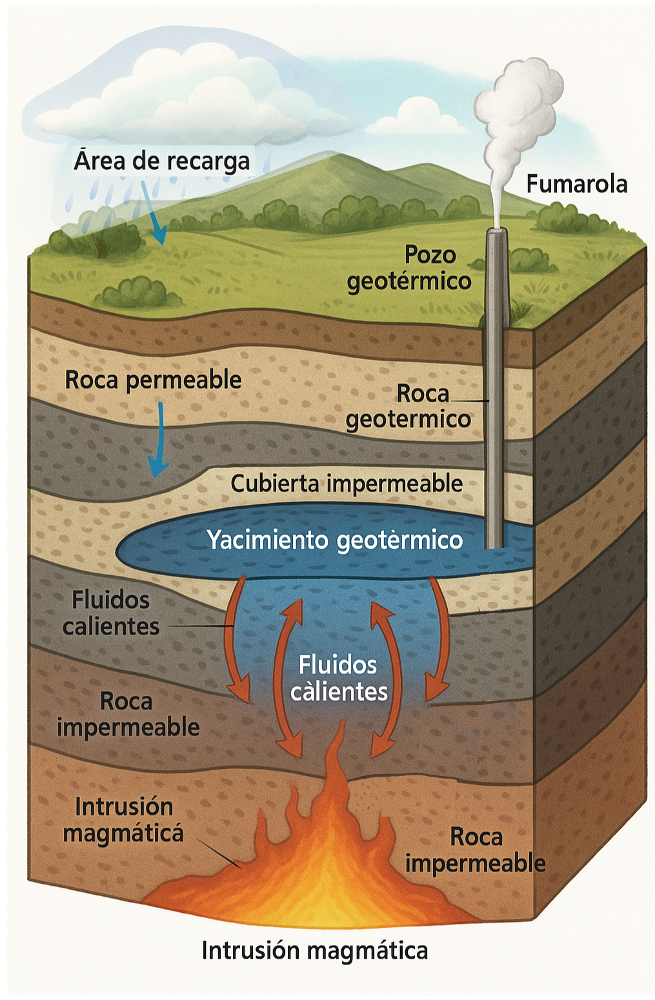
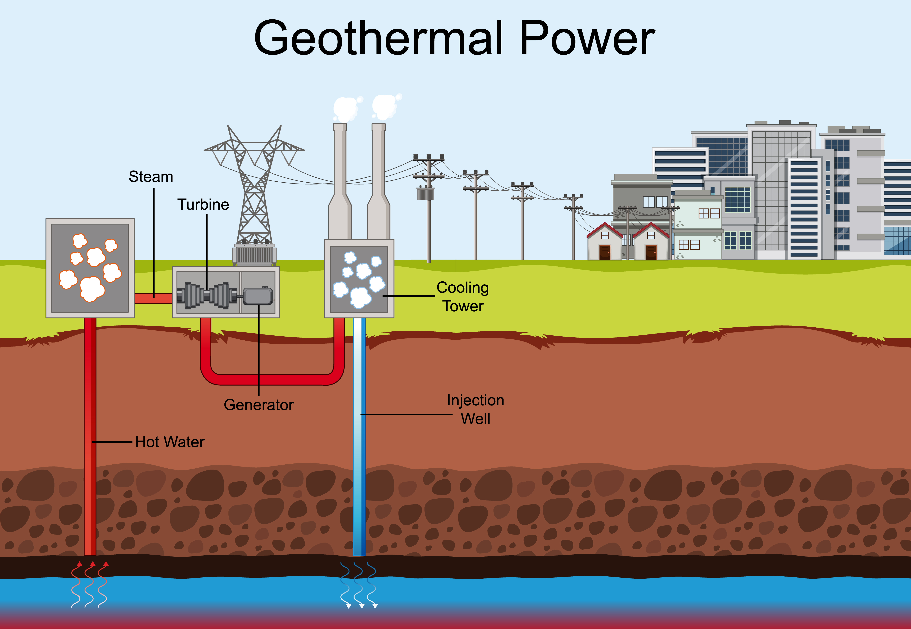
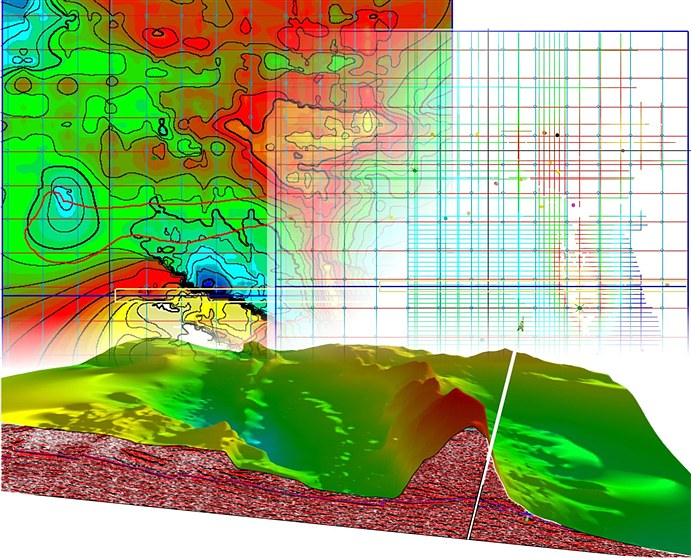

¿Qué es la geotermia?
La geotermia es una fuente de energía limpia y sostenible que aprovecha el calor natural almacenado en el interior de la Tierra. Este calor puede utilizarse directamente para calefacción, climatización o generar electricidad mediante plantas geotérmicas.
¿Para qué sirve la geotermia?
Se aplica en calefacción de viviendas, producción de energía eléctrica, balnearios, invernaderos y procesos industriales. Su uso disminuye la dependencia de combustibles fósiles y reduce significativamente las emisiones de CO₂.
Ventajas de la energía geotérmica
- Bajo impacto ambiental.
- Fuente renovable y constante.
- Alta eficiencia energética.
- Generación de empleo local y desarrollo tecnológico.
- Compatible con otras energías renovables.
Proceso de exploración geotérmica
Incluye cartografía geológica, análisis geoquímico, estudios geofísicos (resistividad, sísmica) y perforación de pozos exploratorios para identificar reservorios de calor accesibles.
Normatividad y contexto en Colombia
Regulada por el Ministerio de Minas y Energía y respaldada por la Ley 1715 de 2014 sobre fuentes no convencionales de energía renovable. La geotermia está siendo evaluada como alternativa viable en regiones volcánicas del país.